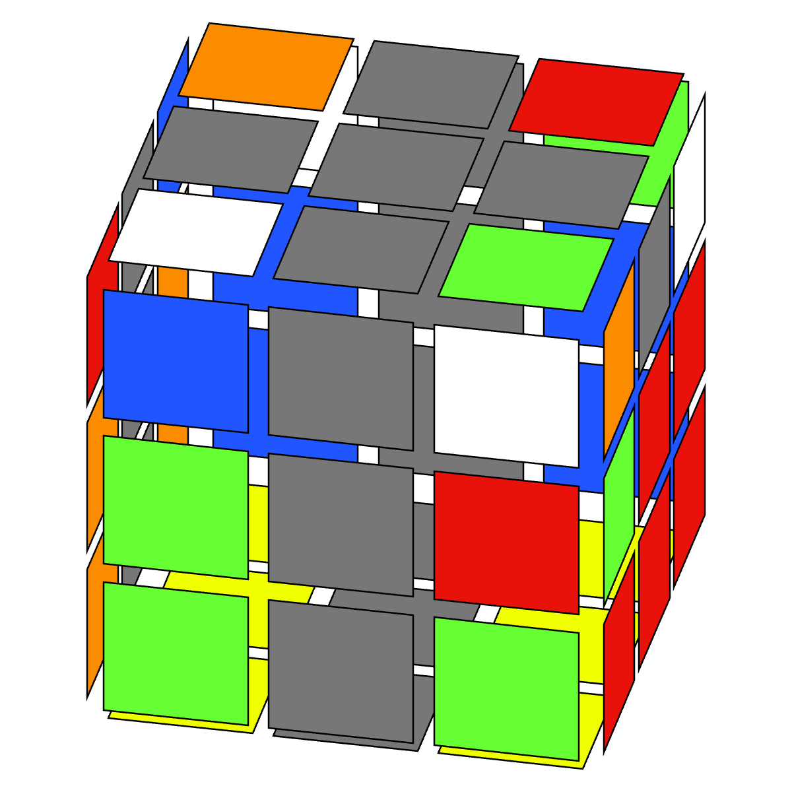
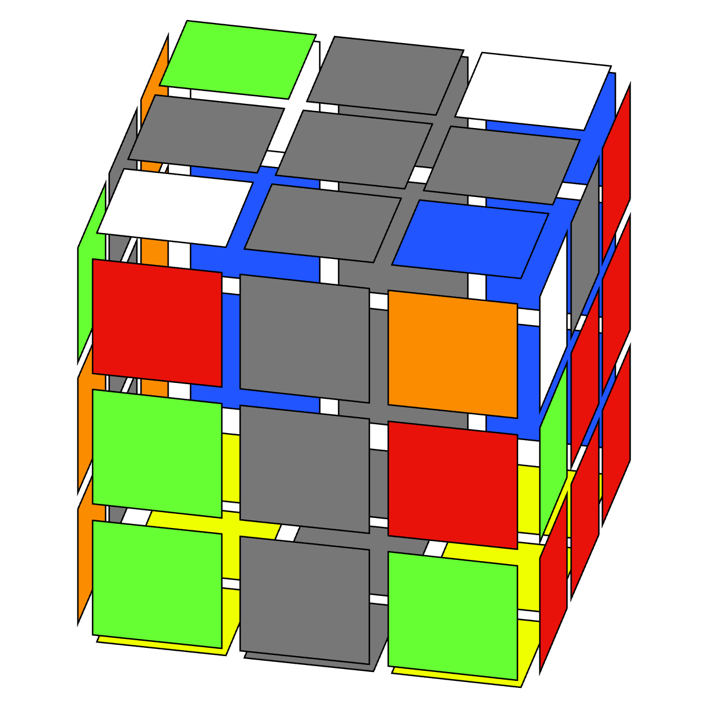
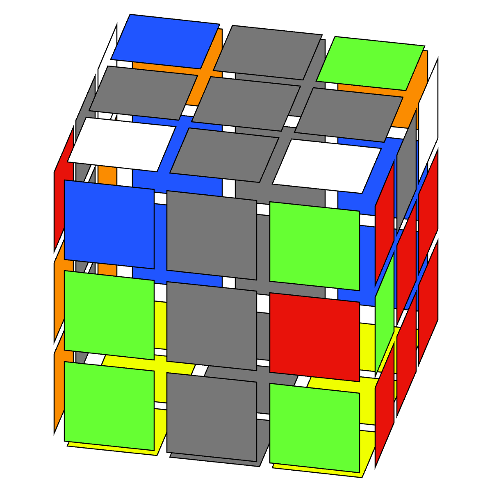
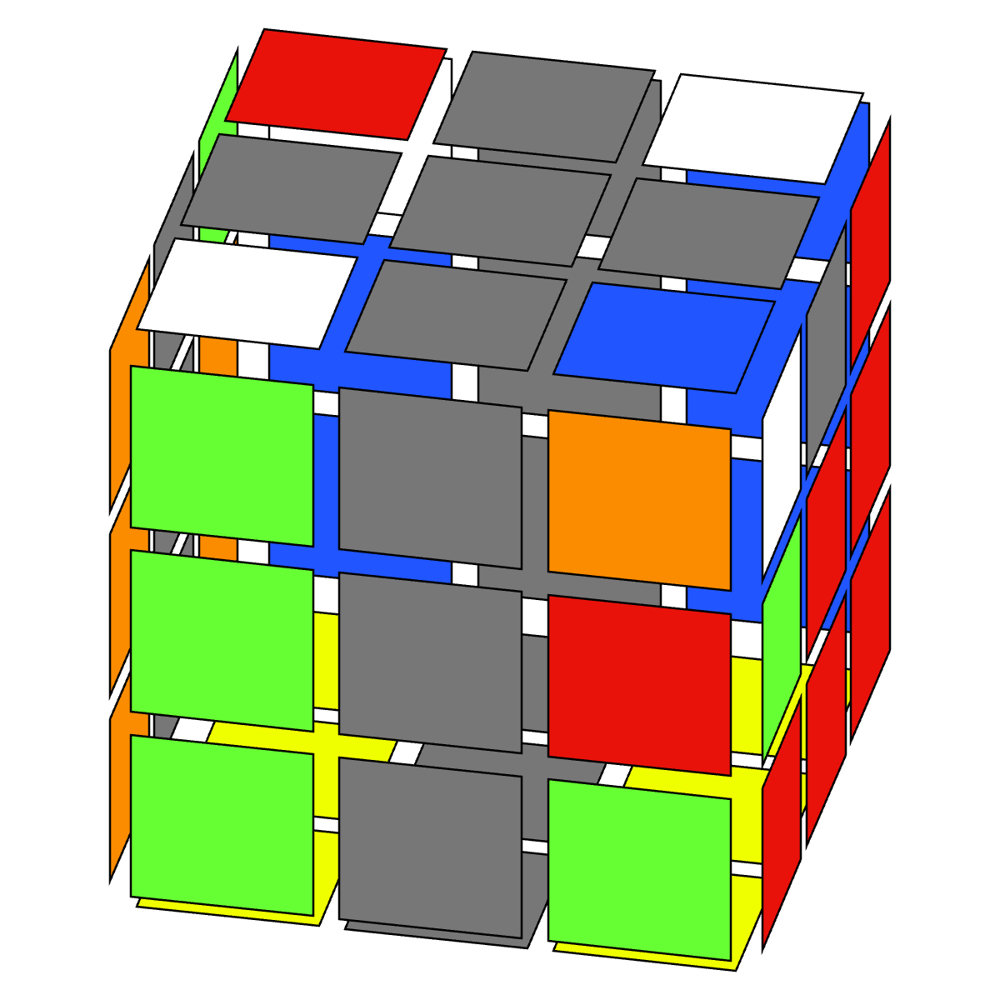
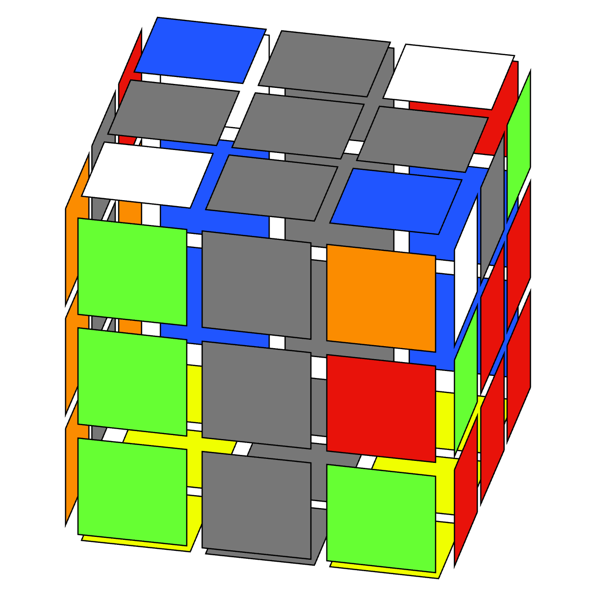
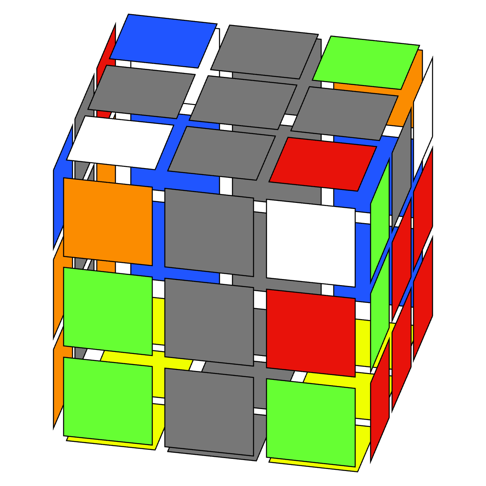

Progreso
Desarrollo de TCMLL por sets
| Set | A | B | ||||||||
|---|---|---|---|---|---|---|---|---|---|---|
| 1a | 2a | 3a | 4a | 5a | 1b | 2b | 3b | 4b | 5b | |
| % Descubierto | 100% | 100% | 100% | 100% | 100% | 100% | 100% | 100% | 100% | 0% |
| % Optimizado | 100% | 100% | 88% | 34% | 23% | 100% | 100% | 46% | 9% | 0% |
Últimas soluciones descubiertas

TCMLL 3a-S5
(U) R' F R F' R U' R' U R U' R' U2 R U' R'
Descubierto por: Cordelia Hu

TCMLL 3a-S4
R2 U R' U' R' U2 F R F' R'
Descubierto por: Cordelia Hu y Tyler Gee

TCMLL 3a-L4
F' U F U r U2 M U R'
Descubierto por: Cordelia Hu y Tery McAcy

TCMLL 3a-U6
(U2) R F U' r' U' M' U' R U F' R'
Descubierto por: Tyler Gee

TCMLL 3a-U2
(U') R U' f R U R' U' R f' R' U' R U' R'
Descubierto por: Reuel Franz

TCMLL 3a-T6
R U' R' U2 R' F R F' R U' R' U' R U R'
Descubierto por: Cordelia Hu
Optimizado por: Tery McAcy
Optimizado por: Tery McAcy

TCMLL 3a-L3
(U) R' U r' U f R f' r U2 R U R
Descubierto por: Cordelia Hu
Filtrado por: Álvaro González Vizuete
Filtrado por: Álvaro González Vizuete

TCMLL 3a-L5
(U') R U2 R' U R U2 R' U F' U' F
Descubierto por: Cordelia Hu
Filtrado por: Álvaro González Vizuete
Filtrado por: Álvaro González Vizuete

TCMLL 3a-S2
(U2) R f U R U' R2 f' U R' U' R U R'
Descubierto por: Cordelia Hu

TCMLL 3a-S3
(U2) R U' R' U' F' U R' U2 R U R' U R U2 F
Descubierto por: Cordelia Hu